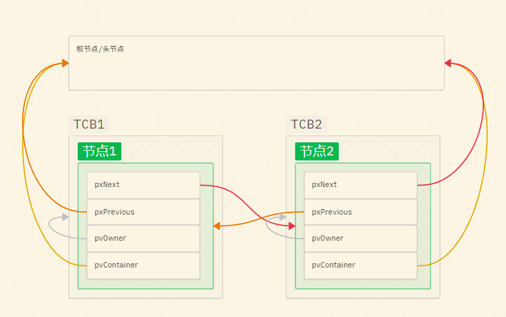

版权信息
warning
本文章为博主原创文章。遵循 CC 4.0 BY-SA 版权协议，转载请附上原文出处链接和本声明。
1. FreeRTOS中的链表结构
上一节我们介绍了任务创建的部分，但对于链表部分没有深入分析，这章我们就来分析一下这个最核心的数据结构，FreeRTOS底层逻辑。理解FreeRTOS的链表，是理解任务调度、时间管理以及各种通信机制（队列、信号量）的基础。
任务的状态切换，本质上就是把任务的TCB从一个链表拔出来，插进另一个链表里。
——鲁迅
1.1 链表结构详解
FreeRTOS 使用的是双向环形链表。在 include/list.h 中，有两个最核心的结构体。
-
链表节点：
ListItem_t(挂在TCB身上的钩子)struct xLIST_ITEM { TickType_t xItemValue; /* 节点的值。用于排序（比如延时阻塞时，按唤醒时间点排序） */ struct xLIST_ITEM * pxNext; /* 指向下一个节点 */ struct xLIST_ITEM * pxPrevious; /* 指向上一个节点 */ void * pvOwner; /* 核心！指向这个节点的主人（通常是 TCB 的指针） */ struct xLIST * pvContainer; /* 指向这个节点当前所在的链表（用来检查任务到底在哪） */ }; typedef struct xLIST_ITEM ListItem_t;还记得我们在 TCB 结构体里看到的
xStateListItem和xEventListItem吗？它们就是这个结构体。 可以把ListItem_t想象成 TCB 伸出来的“钩子”。RTOS 调度器从来不直接把 TCB 放进链表，而是把 TCB 上的这根“钩子”挂进链表。pvOwner的设计：如何通过子结构体成员反向寻回其父结构体？你可能会想到Linux里的container_of宏。不过更有效的方法就是直接在子结构体成员中直接嵌入父结构体的地址，这样就能快速寻回。简单来说，当调度器在链表里找到一个节点时，通过pvOwner就能顺藤摸瓜，直接找到这个节点所属的 TCB。
-
链表根节点：
List_ttypedef struct xLIST { UBaseType_t uxNumberOfItems; /* 链表里现在有几个节点 */ ListItem_t * pxIndex; /* 游标指针：用于遍历链表（同优先级时间片轮转就靠它） */ MiniListItem_t xListEnd; /* 链表的尾部/锚点（为了节省一点点内存，去掉了Owner属性的精简版节点） */ } List_t;如果
ListItem_t是挂在衣服（TCB）上的钩子，那List_t就是衣柜里的“衣架横杆”。系统里定义了各种各样的“衣架”，在task.c中定义：PRIVILEGED_DATA static List_t pxReadyTasksLists[ configMAX_PRIORITIES ]; /**< Prioritised ready tasks. */ PRIVILEGED_DATA static List_t xDelayedTaskList1; /**< Delayed tasks. */ PRIVILEGED_DATA static List_t xDelayedTaskList2; /**< Delayed tasks (two lists are used - one for delays that have overflowed the current tick count. */ PRIVILEGED_DATA static List_t * volatile pxDelayedTaskList; /**< Points to the delayed task list currently being used. */ PRIVILEGED_DATA static List_t * volatile pxOverflowDelayedTaskList; /**< Points to the delayed task list currently being used to hold tasks that have overflowed the current tick count. */ PRIVILEGED_DATA static List_t xPendingReadyList; /**< Tasks that have been readied while the scheduler was suspended. They will be moved to the ready list when the scheduler is resumed. */ #if ( INCLUDE_vTaskSuspend == 1 ) PRIVILEGED_DATA static List_t xSuspendedTaskList; /**< Tasks that are currently suspended. */ #endif-
**pxReadyTasksLists[configMAX_PRIORITIES]
用于挂载就绪任务。
这是一个链表数组。configMAX_PRIORITIES定义的是最大的优先级，默认应该是5。
说明 FreeRTOS 为每一个可能设定的优先级都单独准备了一个链表，优先级相同则在同一链表，调度时根据优先级查表，需要注意的是FreeRTOS 等级数字大的优先级高（5最优先）。 -
xDelayedTaskList1 & 2
用于挂载阻塞和延时任务。
在注释中也说了，两个链表是为了防止系统节拍溢出的问题。下面是一个例子：
首先系统节拍（Tick）是用一个整型变量记录的（比如 32 位）。假设当前 Tick 是0xFFFFFFF0，任务 A 调用了vTaskDelay(100)。任务 A 应该在0xFFFFFFF0 + 100=0x00000054（溢出后）醒来。如果只有一个延时链表，并且按照唤醒时间从小到大排序，调度器在比较时间时就会彻底混乱：0x00000054在数值上比当前的0xFFFFFFF0还要小，这该怎么比？
对此的解决办法是采用双链表：-
当前链表 (由
pxDelayedTaskList指针指向的链表)： 存放那些在Tick 溢出前就会醒来的任务。 -
溢出链表 (由
pxOverflowDelayedTaskList指针指向的链表)： 存放那些唤醒时间越过了溢出界限（也就是唤醒时间在数值上小于当前时间）的任务，比如刚才的任务 A。
-
-
pxDelayedTaskList、pxOverflowDelayedTaskList
注意看这两个并不是链表类型，而是指针类型，指向上面提到的两个双delay链表。它由一个非常巧妙的运用：
当系统 Tick 计满溢出变为 0 时，内核直接把这两个指针互换。溢出链表变成了当前链表，无缝衔接，继续运行。 -
xPendingReadyList
用于暂存“刚刚解除阻塞，但由于特殊原因目前还不能放入 Ready 链表”的任务。
运行的任务 A 正好在修改就绪链表（比如它刚好在创建一个新任务，或者动态改变某个任务的优先级）它通常会调用vTaskSuspendAll()让调度器挂起（不能进行任务切换），以保证修改就绪链表不被打断或就绪链表被其他任务修改。但注意：此时硬件中断是依然开启的。假设调度器正挂起时，一个串口接收中断触发了。ISR（中断服务函数）释放了一个信号量，这个信号量恰好唤醒了一个高优先级任务 B。
此时的情况：- 由于调度器被挂起了，内核不能现在就把任务 B 放进前面讲的
pxReadyTasksLists里去打乱正在进行的内核逻辑。如若直接强行把任务 B 塞进就绪链表，就会发生严重的数据竞争——同时修改同一个双向链表的指针。 - 任务 B 确实已经不属于 Blocked 状态了，不能继续待在 Delayed 链表里。
此时内核会把任务 B 暂时挂到
xPendingReadyList。代码执行到xTaskResumeAll()恢复调度器时，内核会检查这个 Pending 链表。如果里面有任务，就会把它们全部转移到对应的pxReadyTasksLists中，然后触发一次上下文切换。 - 由于调度器被挂起了，内核不能现在就把任务 B 放进前面讲的
-
xSuspendedTaskList
用于挂载被挂起的任务。这里只需注意区分挂起和阻塞。
-
阻塞是因为等待某个具体事件（等待信号量、队列有数据）或者等待时间到达（
vTaskDelay）而进入被动休眠。一旦外部因素解除则会加入就绪链表。 -
而挂起则是主动的休眠（用户程序主动调用了
vTaskSuspend( xTaskHandle )），进入挂起态后，没有运行资格，或者说系统直接无视这个任务，要想重新运行，只能是系统里的另一个活跃任务显式调用vTaskResume(TaskHandle)或其衍生函数。
-
-
双向环形链表：

2. 创建任务函数对链表的操作
-
初始化
vListInitialiseItem( &( pxNewTCB->xStateListItem ) );这个函数只做两件事：
-
pvContainer = NULL;（标记这个钩子目前哪儿也没挂）。 -
pvOwner = pxNewTCB;（把钩子的主人指向刚刚创建的这个 TCB。以后谁拿到这个钩子，谁就能找到这个 TCB）。
-
-
挂入就绪链表 (
prvAddTaskToReadyList)
需要注意这个函数的这个地方：/* If the scheduler is not already running, make this task the * current task if it is the highest priority task to be created * so far. */ if( pxCurrentTCB->uxPriority <= pxNewTCB->uxPriority ) { pxCurrentTCB = pxNewTCB; } else { mtCOVERAGE_TEST_MARKER(); }
pxCurrentTCB是一个全局变量，指向当前运行的TCB。当调度器首次调度时，最先执行的任务设定为最高优先级，最后创建的任务。
3. 链表的操作
此节需要你理解环形链表的基本操作（如插入节点）
3.1 链表节点按值排序插入
这里讲一个FreeRTOS中比较重要的一个链表操作——链表节点按值排序插入。也就是通过比较链表结构体中的 xItemValue 的值将节点按序插入。
3.1.1 作用
在阻塞链表中，xItemValue 指代的是阻塞时间，按序插入，我们就能快速判断任务是否到达延时（如果第一个任务都没有到达延时，那后面的也肯定不会到达），以及快速取出第一个到达延时的任务（就是第一个任务）。非常的高效
3.1.2 流程
我复刻了一下，大致是这样的：
其中 MultiUseValue 即 xItemValue
void ListInsertNodeAndSort(List_t *const theList, ListNode_t *theNodeToInsert)
{
ListNode_t *Iterator; // 迭代器指针，用来记录位置
const uint32_t ValueOfInsertion = theNodeToInsert->MultiUseValue;
if ( ValueOfInsertion == 0xffffffff )
{
// 直接插入到尾节点。即HeadNode的前节点。
// 此时Iterator 指向当前尾节点（也就是要插入节点的上一个节点）
Iterator = theList->HeadNode.PrevNode;
}else
{
// 正常遍历：从头节点开始往下找
// 用一个 for 循环，只要下一个节点的值 <= valueOfInsertion，Iterator 就继续往下走
// 由于是先比较，后更新节点位置，所以当循环结束时，Iterator 也是我们要插入节点的前一个节点
for ( Iterator = (ListNode_t *) &( theList->HeadNode );
Iterator->NextNode->MultiUseValue <= ValueOfInsertion;
Iterator = Iterator->NextNode )
{
// 空循环，靠 for 括号里的逻辑推进即可
}
}
// 下面开始链表节点移植手术
// 请注意顺序！由于我们要靠Iterator->NextNode寻找要插入节点的后节点，所以Iterator->NextNode的值应该最后改变，
// 因此先链接后节点再链接前节点
// 推荐的顺序：
//1. 先把要插入节点的前后节点指定，形成单向链
theNodeToInsert->NextNode = Iterator->NextNode;
theNodeToInsert->PrevNode = Iterator;
//2. 把要插入节点的后节点PrevNode更新，补全后节点的双向链
Iterator->NextNode->PrevNode = theNodeToInsert;
//3. 最后更新插入节点的前节点NextNode，补全前节点的双向链
Iterator->NextNode = theNodeToInsert;
}